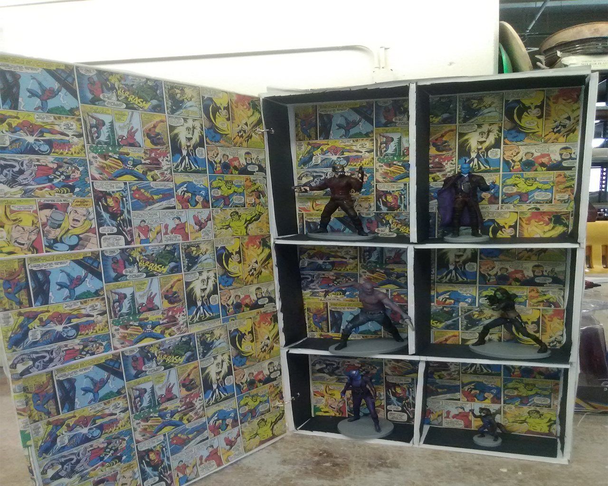

Hello and welcome to my portfolio website! Feel free to explore! 
To learn more about myself and my goals as an artist click.
About MeTo learn more about my project for my BFA Show click on.
The Tax That SinsTo learn more about my past project Riddled with Issues Click on.
Riddled with Issues